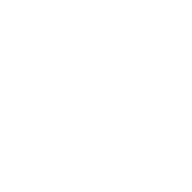
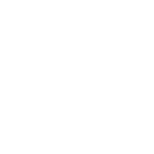

Everything you need to recreate the Paper & Petals look and feel in Unity 6 — drop-in C# components, a ScriptableObject theme, placeholder 9-slice sprites, and embeddable font picks that hold the cozy spell.
Unzip into your project. Scripts go under Assets/Scripts/UI, sprites anywhere under Assets/.
| Folder / file | What it is |
|---|---|
Scripts/UI/PaperPetalsTheme.cs | The ScriptableObject that holds every color, font, sprite, metric and motion curve. Single source of truth. |
Scripts/UI/PPColor.cs | Brand palette as code constants + a hex helper. |
Scripts/UI/PPEasing.cs | CSS-accurate CubicBezier (paper / petal / press) for matching motion. |
Scripts/UI/PPMotion.cs · PPHoverPress.cs | The shared lift + press-scale tween, and a reusable interaction behaviour. |
Scripts/UI/PPButton · PPBadge · PPChip · PPCard · PPInputField · PPNavItem · PPNavGroup | The components, one file each. |
Scripts/UI/Editor/PaperPetalsMenu.cs | Menu to create the theme asset & auto-apply sprite import settings. |
Sprites/pp_*.png | Placeholder 9-slice fills, stroke rings, pill, circle and a soft paper shadow. Swap for real art later. |
Scripts/UI into Assets/Scripts/UI and Sprites anywhere under Assets/. Unity compiles the scripts automatically. You need TextMeshPro installed (Window ▸ TextMeshPro ▸ Import TMP Essentials).Tools ▸ Paper & Petals ▸ Create Theme Asset. This writes Assets/Resources/PaperPetalsTheme.asset with all brand colors pre-filled. Because it lives in Resources and is named exactly PaperPetalsTheme, every component auto-loads it — no manual wiring.Tools ▸ Paper & Petals ▸ Apply Sprite Import Settings. It sets each pp_*.png to Sprite, 400 px-per-unit, and the correct 9-slice border. Then drag them onto the matching fields of the theme asset.The brand fonts (Henriette, Adorn Pomander, Chaparral Pro) are Adobe Fonts — they cannot be embedded in a shipped game. These four open-licence (SIL OFL) families carry the same warm, cottagecore character and are free to bake into a Unity build. Every specimen below is rendered in the actual recommended font.
displayFontuiFontscriptFontflourishFont.ttf files into Assets/Fonts/….Window ▸ TextMeshPro ▸ Font Asset Creator. Source font = the imported .ttf, Render Mode = SDFAA, Atlas 1024², Character Set = Extended ASCII (or your locale). Generate, then Save the asset next to the font.displayFont / uiFont / scriptFont / flourishFont. Components pull from these automatically.characterSpacing is roughly em × 100. The label tracking .16em → 16, micro badges .20–.22em → 20–22. These are stored on the theme (lsLabel, lsMicro).Every CSS variable has a home on the theme asset. The palette is pre-filled by the menu command; here's the full map.
| CSS token | Value | Theme field / Unity |
|---|---|---|
--fs-h1 … --fs-micro | 42 / 32 / 24 / 18 / 16 / 13 / 11 | fsH1…fsMicro → TMP fontSize (at 1024 ref) |
--lh-body | 1.55 | TMP Line Spacing ≈ +18 (TMP units are %-of-em offsets) |
--r-sm / md / lg / xl | 6 / 10 / 16 / 24 | rSm…rXl → pick the matching pp_fill_r* sprite |
--bw-card | 1.5px | stroke sprite tint = hairline |
--sh-card | layered paper shadow | pp_shadow_r16 behind, tint shadowInk @ 22% α |
--dur-fast / base / slow | 150 / 240 / 480 ms | durFast / durBase / durSlow (seconds) |
--ease-paper / petal / press | cubic-bezier | CubicBezier.Paper / Petal / Press |
| tap target | 48 × 48 min | tapMin — never go smaller (accessibility floor) |
uGUI has no border-radius or box-shadow — rounded surfaces are sliced sprites. These are white & tintable: one fill + one matching ring per radius, plus a soft shadow. Tint them from the theme; swap for hand-painted paper textures whenever you like (keep the same border).



Each script auto-styles from the theme in edit mode ([ExecuteAlways] / OnValidate), so you build the hierarchy once, wire the graphics, and it looks right immediately. green = the GameObject carrying the script; orange = the field you assign it to.
PPButtonDerives from uGUI Button, so you keep onClick, navigation and interactable. Set variant (Primary / Secondary / Ghost / Danger) and pill. Primary fills forest with cream text; secondary & danger show the stroke ring.
PPBadge & filter chip — PPChipBoth are pills. PPBadge is static and maps Common / Uncommon / Rare / Heirloom to the rarity colors. PPChip toggles on click (with the hover-lift feel) and fires onValueChanged.
PPCardCream surface, parchment hairline, layered paper shadow. Toggle stitched to hide the border and show the inset hand-stitch ring instead.
PPInputFieldWraps a TMP_InputField. Cream surface + hairline; on focus the border turns sage and a soft sage ring appears — never blue.
PPNavItem + PPNavGroupPut PPNavGroup on the rail; it finds the child items and enforces single-selection. Active item fills forest with cream icon + label; inactive warms on hover. Icons are outline sprites (Tabler-style, 1.75px stroke) tinted by the script.
Soft, slow, weighted — never bouncy. The motion is baked into the components; these are the values, stored on the theme so you can tune globally.
| Gesture | What happens | Duration · easing |
|---|---|---|
| Hover (mouse) | element lifts hoverLift = 2px, background warms one step | 240 ms · easePaper |
| Press (touch) | scales to pressScale = 0.96, sinks back to base Y | 150 ms · easePress |
| Card / modal entrance | fade + small rise | 240 ms · easePaper |
| Parcel / ephemera drift-in | drift up into place | 480 ms · easePetal |
// CubicBezier matches the CSS curve exactly (Newton-Raphson solve). var ease = CubicBezier.Paper; // cubic-bezier(0.32,0.72,0.32,1) float k = ease.Evaluate(t01); // eased 0..1 for your own tweens // Reduced motion? Pass duration 0 and the tween snaps instantly. StartCoroutine(PPMotion.LiftPress(rt, baseY, baseY + 2f, 0.96f, dur, ease));